Defer the execution of sequence elements in ER formats
Overview
You can use the Operations designer of the Electronic reporting (ER) framework to configure the format component of an ER solution that is used to generate outbound documents in a text format. The hierarchical structure of the configured format component consists of format elements of various types. These format elements are used to fill generated documents with the required information at runtime. By default, when you run an ER format, the format elements are run in the same order as they are presented in the format hierarchy: one by one, from top to bottom. However, at design time, you can change the execution order for any sequence elements of the configured format component.
By turning on the Deferred execution option for a sequence format element in the configured format, you can defer (postpone) the execution of that element. In this case, the element isn't run until all other elements of its parent have been run.
To learn more about this feature, complete the example in this topic.
Limitations
The Deferred execution option is supported only for sequence elements that are configured for an ER format that is used to generate outbound documents in text format.
The Deferred execution option isn't applicable to sequences that have been configured as trimmed sequences where the maximum length is limited.
Example: Defer the execution of a sequence element in an ER format
The following steps explain how a user in the System administrator or Electronic reporting functional consultant role can configure an ER format that contains a sequence element where order of execution differs from the order in the format hierarchy.
These steps can be performed in the USMF company in Microsoft Dynamics 365 Finance.
Prerequisites
To complete this example, you must have access to the USMF company in Finance for one of the following roles:
- Electronic reporting functional consultant
- System administrator
If you haven't yet completed the example in the Defer the execution of XML elements in ER formats topic, download the following configurations of the sample ER solution.
| Content description | File name |
|---|---|
| ER data model configuration | Model to learn deferred elements.version.1.xml |
| ER model mapping configuration | Mapping to learn deferred elements.version.1.1.xml |
Before you begin, you must also download and save the following configuration of the sample ER solution.
| Content description | File name |
|---|---|
| ER format configuration | Format to learn deferred sequences.version.1.1.xml |
Import the sample ER configurations
Go to Organization administration > Workspaces > Electronic reporting.
Select Reporting configurations.
On the Configurations page, if the Model to learn deferred elements configuration isn't available in the configuration tree, import the ER data model configuration:
- Select Exchange, and then select Load from XML file.
- Select Browse, find and select the Model to learn deferred elements.1.xml file, and then select OK.
If the Mapping to learn deferred elements configuration isn't available in the configuration tree, import the ER model mapping configuration:
- Select Exchange, and then select Load from XML file.
- Select Browse, find and select the Mapping to learn deferred elements.1.1.xml file, and then select OK.
Import the ER format configuration:
- Select Exchange, and then select Load from XML file.
- Select Browse, find and select the Format to learn deferred sequences.1.1.xml file, and then select OK.
In the configuration tree, expand Model to learn deferred elements.
Review the list of imported ER configurations in the configuration tree.
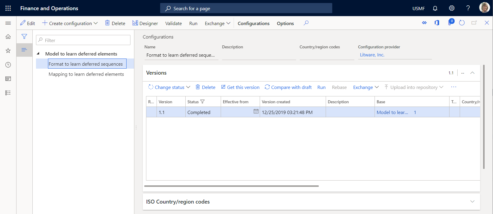
Activate a configurations provider
Go to Organization administration > Workspaces > Electronic reporting.
On the Localization configurations page, in the Configuration providers section, make sure that the configuration provider for the Litware, Inc. (
http://www.litware.com) sample company is listed, and that it's marked as active. If this configuration provider isn't listed, or if it isn't marked as active, follow the steps in the Create a configuration provider and mark it as active topic.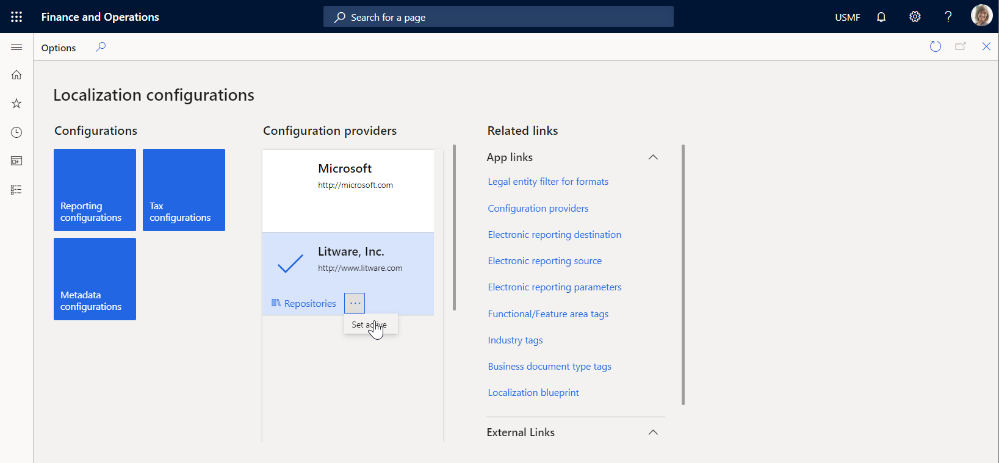
Review the imported model mapping
Review the settings of the ER model mapping component that is configured to access tax transactions and expose accessed data on request.
Go to Organization administration > Workspaces > Electronic reporting.
Select Reporting configurations.
On the Configurations page, in the configuration tree, expand Model to learn deferred elements.
Select the Mapping to learn deferred elements configuration.
Select Designer to open the list of mappings.
Select Designer to review the mapping details.
Select Show details.
Review the data sources that are configured to access tax transactions:
The Transactions data source of the Table record type is configured to access records of the TaxTrans application table.
The Vouchers data source of the Calculated field type is configured to return the required voucher codes (INV-10000349 and INV-10000350) as a list of records.
The Filtered data source of the Calculated field type is configured to select, from the Transactions data source, only tax transactions of the required vouchers.
The $TaxAmount field of the Calculated field type is added for the Filtered data source to expose the tax value that has the opposite sign.
The Grouped data source of the Group By type is configured to group filtered tax transactions of the Filtered data source.
The TotalSum aggregation field of the Grouped data source is configured to summarize values of the $TaxAmount field of the Filtered data source for all filtered tax transactions of that data source.
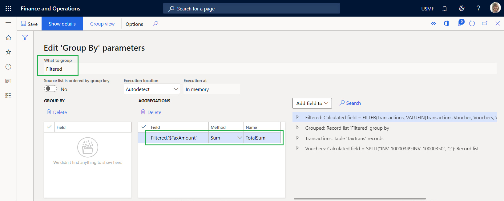
Review how the configured data sources are bound to the data model, and how they expose accessed data to make it available in an ER format:
- The Filtered data source is bound to the Data.List field of the data model.
- The $TaxAmount field of the Filtered data source is bound to the Data.List.Value field of the data model.
- The TotalSum field of the Grouped data source is bound to the Data.Summary.Total field of the data model.
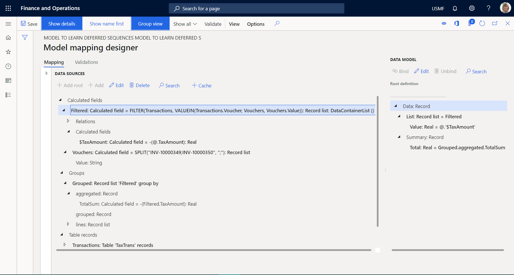
Close the Model mapping designer and Model mappings pages.
Review the imported format
On the Configurations page, in the configuration tree, select the Format to learn deferred sequences configuration.
Select Designer to review the format details.
Select Show details.
Review the settings of the ER format components that are configured to generate an outbound document in text format that includes details of the tax transactions:
The Report\Lines sequence format element is configured to fill the outbound document with a single line that is generated from the nested sequence elements (Header, Record, and Summary).
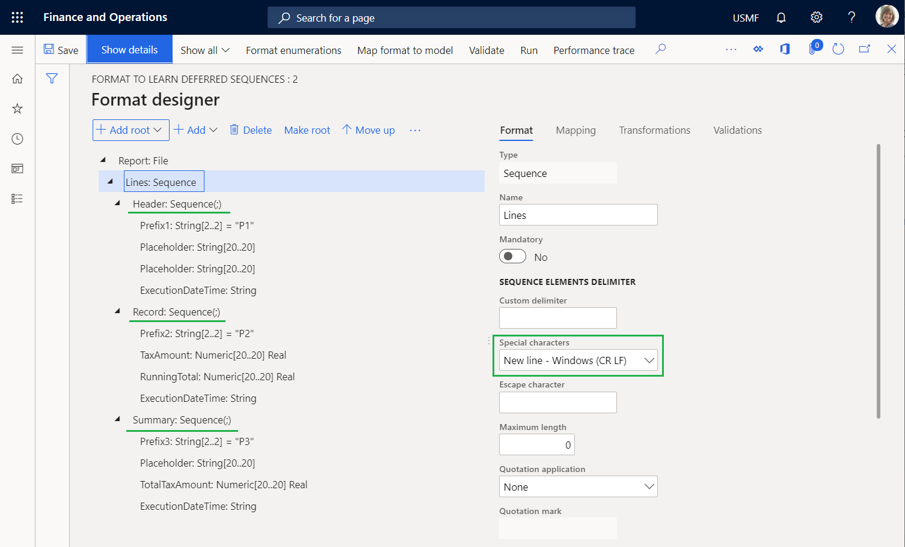
The Report\Lines\Header sequence format element is configured to fill the outbound document with a single header line that shows the date and time when the processing starts.
The Report \Lines\Record sequence format element is configured to fill the outbound document with a single line that shows the details of individual tax transactions. These tax transactions are separated by a semicolon.
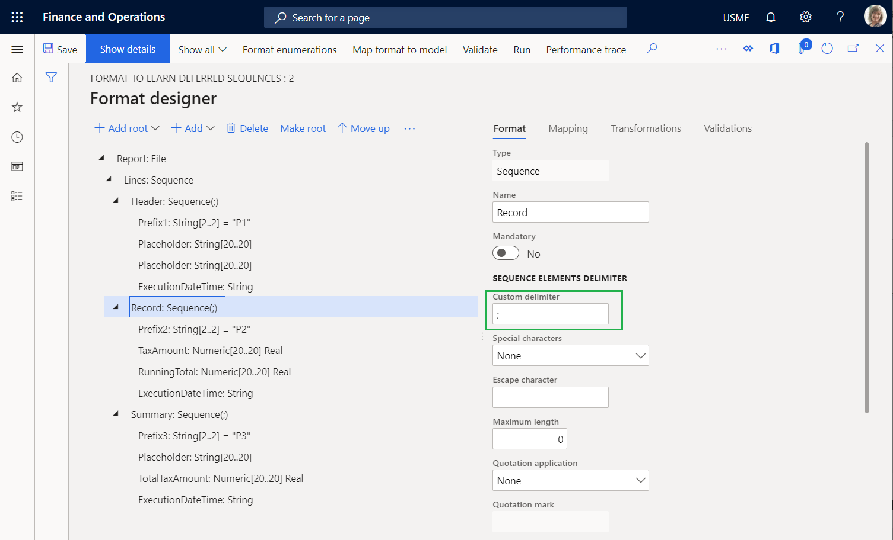
The Report\Lines\Summary sequence format element is configured to fill the outbound document with a single summary line that includes the sum of the tax values from the processed tax transactions.
On the Mapping tab, review the following details:
- The Report\Lines\Header element doesn't have to be bound to a data source to generate a single line in an outbound document.
- The Prefix1 element generates P1 symbols to indicate that the line that is added is the report header line.
- The ExecutionDateTime element generates the date and time (including milliseconds) when the header line is added.
- The Report\Lines\Record element is bound to the model.Data.List list to generate a single line for every record from the bound list.
- The Prefix2 element generates P2 symbols to indicate that the line that is added is for the tax transaction details.
- The TaxAmount element is bound to model.Data.List.Value (which is shown as @.Value in the relative path view) to generate the tax value of the current tax transaction.
- The RunningTotal element is a placeholder for the running total of the tax values. Currently, this element has no output, because neither a binding nor a default value is configured for it.
- The ExecutionDateTime element generates the date and time (including milliseconds) when the current transaction is processed in this report.
- The Report\Lines\Summary element doesn't have to be bound to a data source to generate a single line in an outbound document.
- The Prefix3 element generates P3 symbols to indicate that the line that is added contains the total tax value.
- The TotalTaxAmount element is bound to model.Data.Summary.Total to generate the sum of the tax values of the processed tax transactions.
- The ExecutionDateTime element generates the date and time (including milliseconds) when the summary line is added.
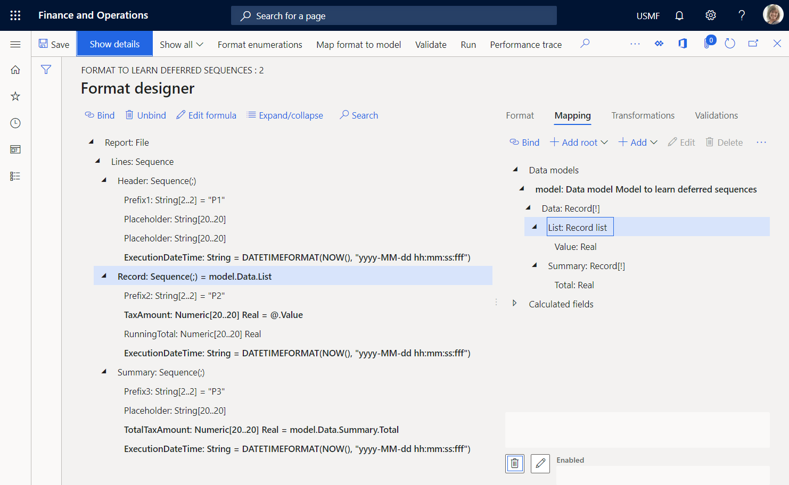
Run the imported format
On the Format designer page, select Run.
Download the file that the web browser offers, and open it for review.
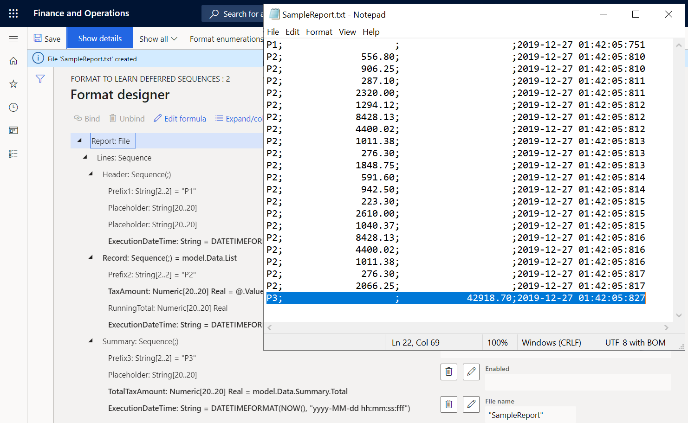
Notice that summary line 22 presents the sum of the tax values for the processed transactions. Because the format is configured to use the model.Data.Summary.Total binding to return this sum, the sum is calculated by calling the TotalSum aggregation of the Grouped data source of the GroupBy type that uses the model mapping. To calculate this aggregation, model mapping iterates over all transactions that have been selected in the Filtered data source. By comparing the execution times of lines 21 and 22, you can determine that calculation of the sum took 10 milliseconds (ms). By comparing the execution times of lines 2 and 21, you can determine that generation of all transactional lines took 7 ms. Therefore, a total of 17 ms was required.
Modify the format so that the summing is based on generated output
If the volume of transactions is much larger than the volume in the current example, the summing time might increase and cause performance issues. By changing the setting of the format, you can help prevent these performance issues. Because you access tax values to include them in the generated report, you can reuse this information to sum tax values. For more information, see Configure format to do counting and summing.
On the Format designer page, on the Format tab, select the Report file element in the format tree.
Set the Collect output details option to Yes. You can now configure this format by using the content of an existing report as a data source that can be accessed by using the built-in ER functions in the Data collection category.
On the Mapping tab, select the Report\Lines sequence element.
Configure the Collected data key name expression as
WsColumn.Configure the Collected data key value expression as
WsRow.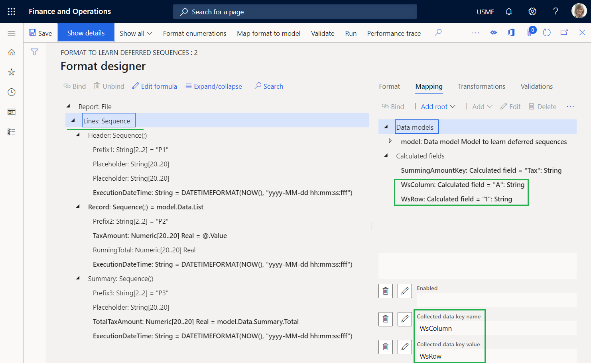
Select the Report\Lines\Record\TaxAmount numeric element.
Configure the Collected data key name expression as
SummingAmountKey.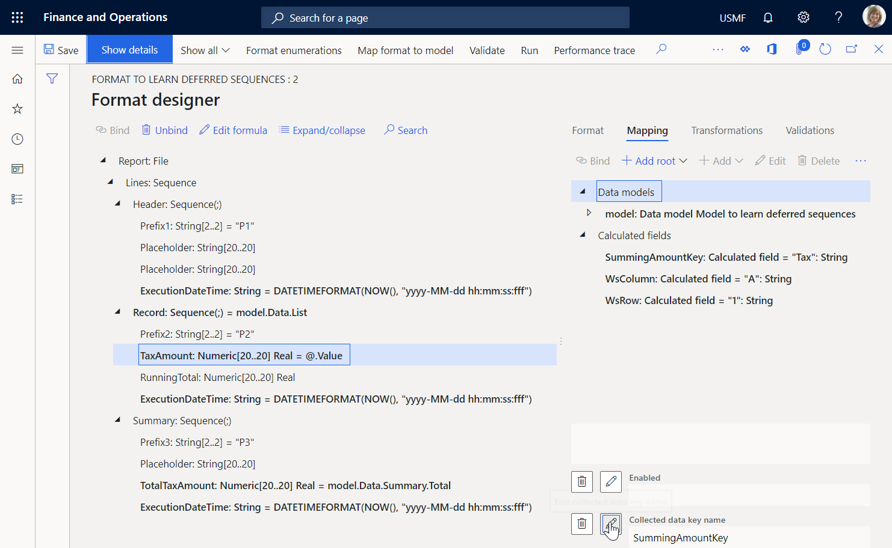
You can consider this setting the fulfillment of a virtual worksheet, where the value of cell A1 is appended with the value of the tax amount from every processed tax transaction.
Select the Report\Lines\Record\RunningTotal numeric element, and then select Edit formula.
Configure the
SUMIF(SummingAmountKey, WsColumn, WsRow)expression by using the built-in SUMIF ER function.Select Save.
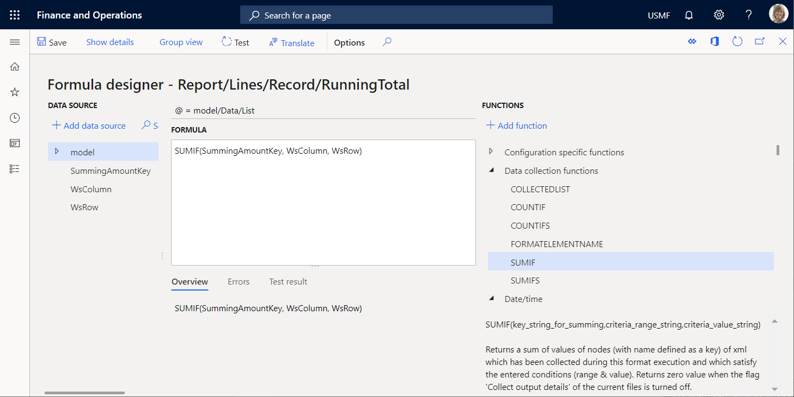
Close the Formula designer page.
Select Save, and then select Run.
Download and review the file that the web browser offers.
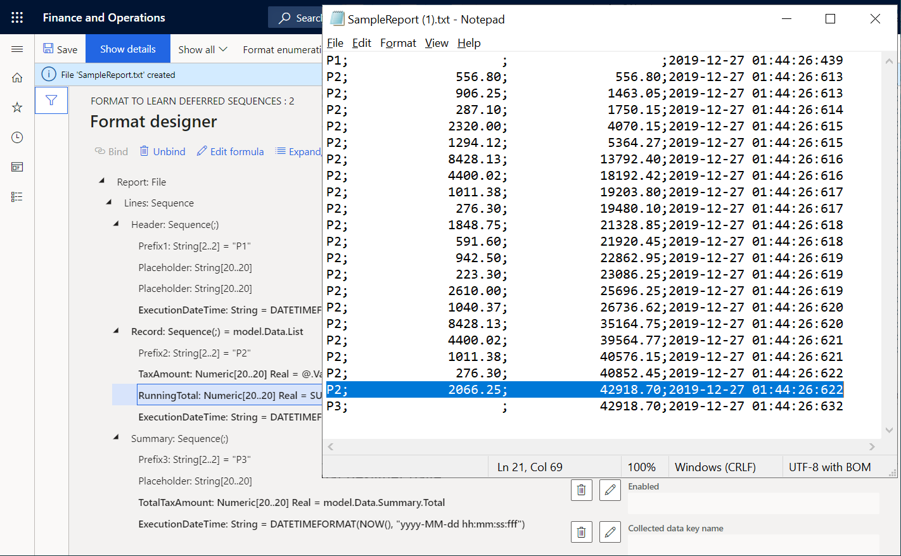
Line 21 contains the running total of tax values that is calculated for all processed transactions by using the generated output as a data source. This data source starts from the beginning of the report and continues through the last tax transaction. Line 22 contains the sum of the tax values for all processed transactions that are calculated in the model mapping by using the data source of the GroupBy type. Notice that these values are equal. Therefore, the output-based summing can be used instead of GroupBy. By comparing the execution times of lines 2 and 21, you can determine that generation of all the transactional lines and summing took 9 ms. Therefore, as far as the generation of detailed lines and the summing of tax values are concerned, the modified format is approximately two times faster than the original format.
Select the Report\Lines\Summary\TotalTaxAmount numeric element, and then select Edit formula.
Enter the
SUMIF(SummingAmountKey, WsColumn, WsRow)expression instead of the existing expression.Select Save, and then select Run.
Download and review the file that the web browser offers.
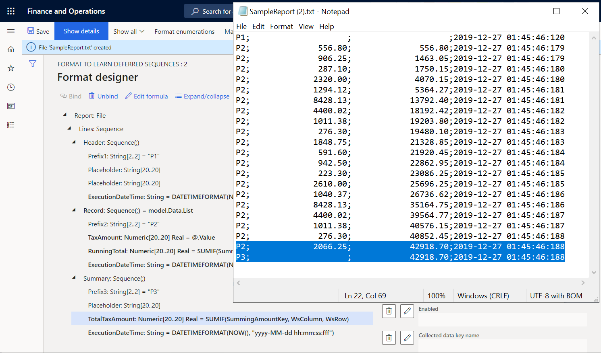
Notice that the running total of tax values on the last transaction details line now equals the sum on the summary line.
Put values of output-based summing in the report header
If, for example, you must present the sum of tax values in the header of your report, you can modify your format.
On the Format designer page, on the Format tab, select the Report\Lines\Summary sequence element.
Select Move up.
Select Save, and then select Run.
Download and review the file that the web browser offers.
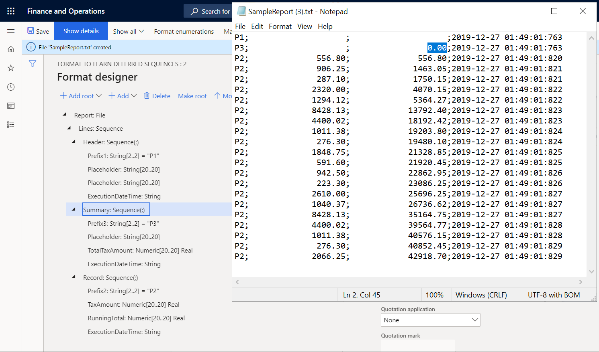
Notice that the sum of tax values on summary line 2 now equals 0 (zero), because this sum is now calculated based on the generated output. When line 2 is generated, the generated output doesn't yet contain lines that have transaction details. You can configure this format to defer the execution of the Report\Lines\Summary sequence element until the Report\Lines\Record sequence element has been run for all tax transactions.
Defer the execution of the summary sequence so that the calculated total is used
On the Format designer page, on the Format tab, select the Report\Lines\Summary sequence element.
Set the Deferred execution option to Yes.
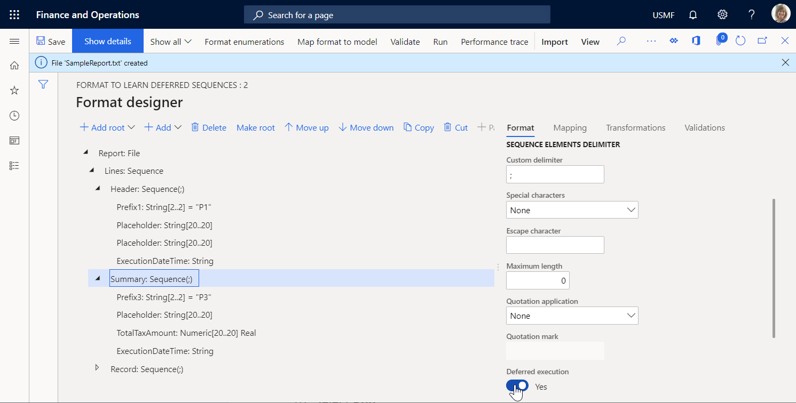
Select Save, and then select Run.
Download and review the file that the web browser offers.
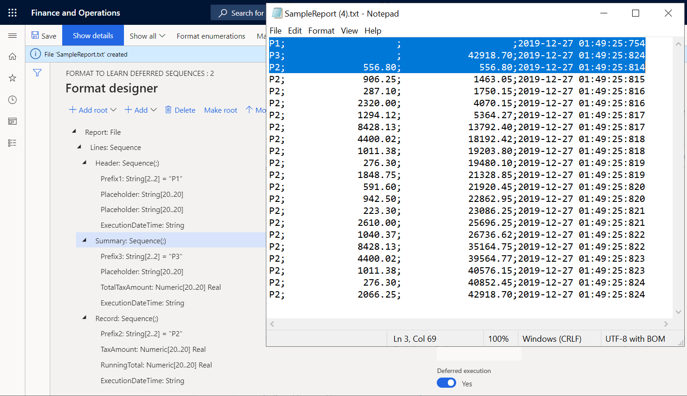
The Report\Lines\Summary sequence element is now run only after all other items that are nested under its parent element, Report\Lines, have been run. Therefore, it's run after the Report\Lines\Record sequence element has been run for all tax transactions of the model.Data.List data source. The execution times of lines 1, 2, and 3, and of the last line, 22, reveal this fact.